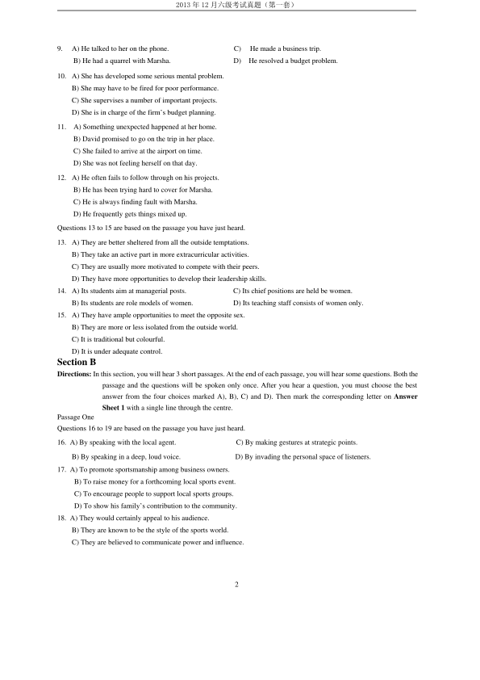
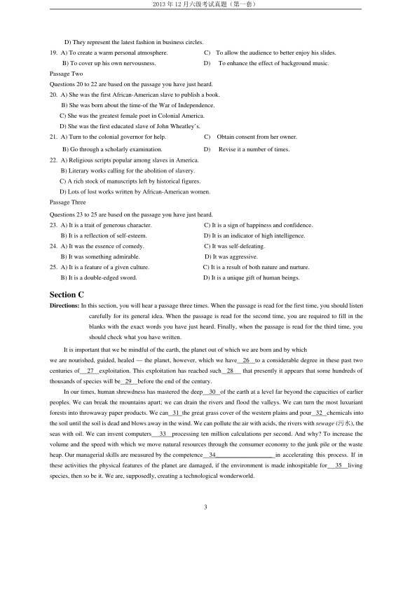
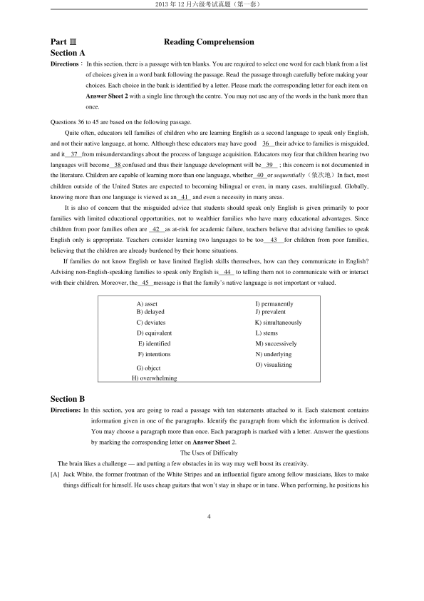
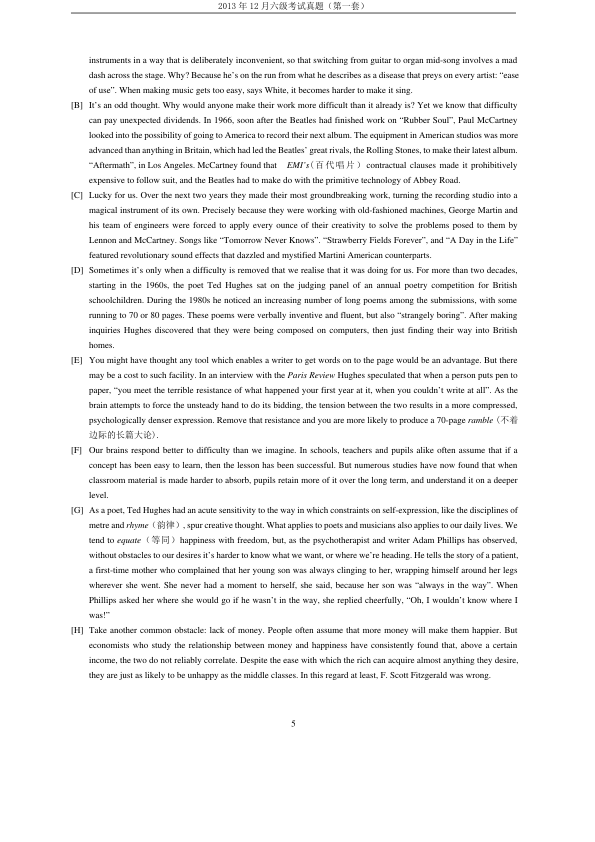
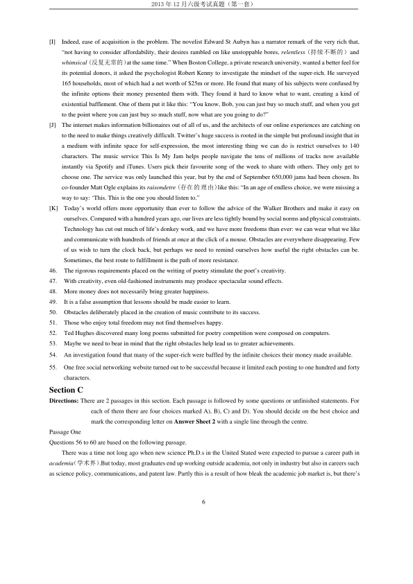
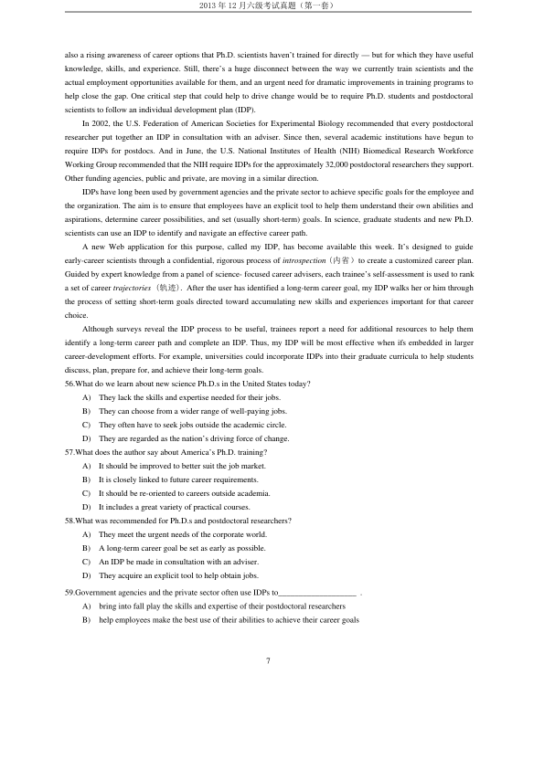
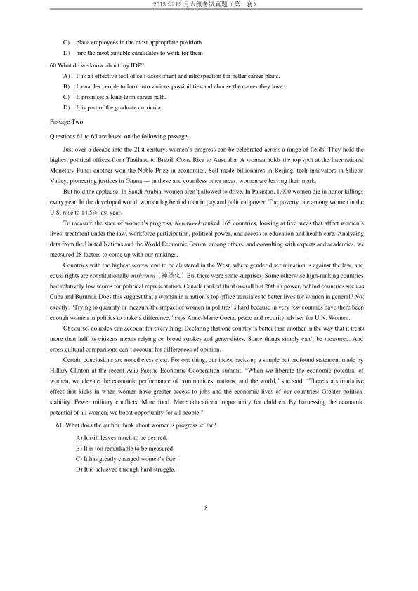
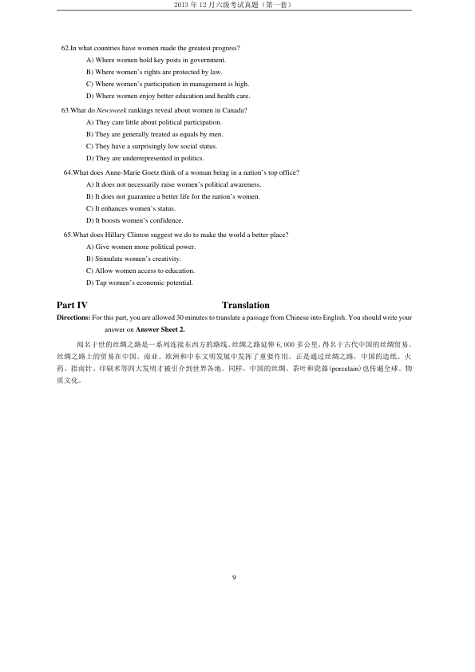

第 1 / 9 页

2013 年12 月六级考试真题（第一套）
2013 年12 月六级考试真题（第一套）
Part I
Writing
Directions: For this part you are allowed 30 minutes to write an essay commenting on the remark “The greatest use of life
is to spend it for something that will outlast it.” You can give examples to illustrate your point and then
explain what you will do to make your life more meaningful You should write at least 150 words but no
more than 200 words.
Part Ⅱ
Listening Comprehension
Section A
Directions: In this section, you will hear 8 short conversations and 2 long conversations. At the end of each conversation,
one or more questions will be asked about what was said. Both the conversation and the questions will be
spoken only once. After each question there will be a pause. During the pause, you must read the four
choices marked A), B), C) and D), and decide which is the best answer. Then mark the corresponding letter
on Answer Sheet 1 with a single line through the centre.
1.
A) Weather conditions.
C) An error in the order.
B) Labor problems.
D) Misplacing of goods.
2.
A) What the woman says makes a lot of sense.
B) The rich are opposed to social welfare.
C) He agrees with Mr. Johnson’s views.
D) He is sympathetic with poor people.
3.
A) He has work to finish in time.
C) He has a tough problem to solve.
B) He will be practicing soccer.
D) He will be attending a meeting.
4.
A) Mary will not be able to keep a dog in the building.
B) Mary should get rid of her pet as soon as possible.
C) Mary might as well send her dog to her relative.
D) Mary is not happy with the ban on pet animals.
5.
A) He does not believe they are twin sisters.
C) Lisa and Gale are not very much alike.
B) The woman seems a bit hard of hearing.
D) The twins, voices are quite different.
6.
A) The serious economic crisis in Britain.
C) A package deal to be signed in November.
B) A message from their business associates.
D) Their ability to deal with financial problems.
7.
A) Cleaning the pants will take longer than usual.
B) The man will be charged extra for the service.
C) The man has to go to the main cleaning facility.
D) It is impossible to remove the stain completely.
8.
A) European markets.
C) Luxury goods.
B) Imported products.
D) A protest rally.
Questions 9 to 12 are based on the conversation you have just heard.
查看 / 复制本页文字
2013 年12 月六级考试真题（第一套） 2013 年12 月六级考试真题（第一套） Part I Writing Directions: For this part you are allowed 30 minutes to write an essay commenting on the remark “The greatest use of life is to spend it for something that will outlast it.” You can give examples to illustrate your point and then explain what you will do to make your life more meaningful You should write at least 150 words but no more than 200 words. Part Ⅱ Listening Comprehension Section A Directions: In this section, you will hear 8 short conversations and 2 long conversations. At the end of each conversation, one or more questions will be asked about what was said. Both the conversation and the questions will be spoken only once. After each question there will be a pause. During the pause, you must read the four choices marked A), B), C) and D), and decide which is the best answer. Then mark the corresponding letter on Answer Sheet 1 with a single line through the centre. 1. A) Weather conditions. C) An error in the order. B) Labor problems. D) Misplacing of goods. 2. A) What the woman says makes a lot of sense. B) The rich are opposed to social welfare. C) He agrees with Mr. Johnson’s views. D) He is sympathetic with poor people. 3. A) He has work to finish in time. C) He has a tough problem to solve. B) He will be practicing soccer. D) He will be attending a meeting. 4. A) Mary will not be able to keep a dog in the building. B) Mary should get rid of her pet as soon as possible. C) Mary might as well send her dog to her relative. D) Mary is not happy with the ban on pet animals. 5. A) He does not believe they are twin sisters. C) Lisa and Gale are not very much alike. B) The woman seems a bit hard of hearing. D) The twins, voices are quite different. 6. A) The serious economic crisis in Britain. C) A package deal to be signed in November. B) A message from their business associates. D) Their ability to deal with financial problems. 7. A) Cleaning the pants will take longer than usual. B) The man will be charged extra for the service. C) The man has to go to the main cleaning facility. D) It is impossible to remove the stain completely. 8. A) European markets. C) Luxury goods. B) Imported products. D) A protest rally. Questions 9 to 12 are based on the conversation you have just heard.
第 2 / 9 页

2013 年12 月六级考试真题（第一套）
2
9.
A) He talked to her on the phone.
C)
He made a business trip.
B) He had a quarrel with Marsha.
D)
He resolved a budget problem.
10. A) She has developed some serious mental problem.
B) She may have to be fired for poor performance.
C) She supervises a number of important projects.
D) She is in charge of the firm’s budget planning.
11.
A) Something unexpected happened at her home.
B) David promised to go on the trip in her place.
C) She failed to arrive at the airport on time.
D) She was not feeling herself on that day.
12. A) He often fails to follow through on his projects.
B) He has been trying hard to cover for Marsha.
C) He is always finding fault with Marsha.
D) He frequently gets things mixed up.
Questions 13 to 15 are based on the passage you have just heard.
13. A) They are better sheltered from all the outside temptations.
B) They take an active part in more extracurricular activities.
C) They are usually more motivated to compete with their peers.
D) They have more opportunities to develop their leadership skills.
14. A) Its students aim at managerial posts.
C) Its chief positions are held be women.
B) Its students are role models of women.
D) Its teaching staff consists of women only.
15. A) They have ample opportunities to meet the opposite sex.
B) They are more or less isolated from the outside world.
C) It is traditional but colourful.
D) It is under adequate control.
Section B
Directions: In this section, you will hear 3 short passages. At the end of each passage, you will hear some questions. Both the
passage and the questions will be spoken only once. After you hear a question, you must choose the best
answer from the four choices marked A), B), C) and D). Then mark the corresponding letter on Answer
Sheet 1 with a single line through the centre.
Passage One
Questions 16 to 19 are based on the passage you have just heard.
16. A) By speaking with the local agent.
C) By making gestures at strategic points.
B) By speaking in a deep, loud voice.
D) By invading the personal space of listeners.
17. A) To promote sportsmanship among business owners.
B) To raise money for a forthcoming local sports event.
C) To encourage people to support local sports groups.
D) To show his family’s contribution to the community.
18. A) They would certainly appeal to his audience.
B) They are known to be the style of the sports world.
C) They are believed to communicate power and influence.
查看 / 复制本页文字
2013 年12 月六级考试真题（第一套） 2 9. A) He talked to her on the phone. C) He made a business trip. B) He had a quarrel with Marsha. D) He resolved a budget problem. 10. A) She has developed some serious mental problem. B) She may have to be fired for poor performance. C) She supervises a number of important projects. D) She is in charge of the firm’s budget planning. 11. A) Something unexpected happened at her home. B) David promised to go on the trip in her place. C) She failed to arrive at the airport on time. D) She was not feeling herself on that day. 12. A) He often fails to follow through on his projects. B) He has been trying hard to cover for Marsha. C) He is always finding fault with Marsha. D) He frequently gets things mixed up. Questions 13 to 15 are based on the passage you have just heard. 13. A) They are better sheltered from all the outside temptations. B) They take an active part in more extracurricular activities. C) They are usually more motivated to compete with their peers. D) They have more opportunities to develop their leadership skills. 14. A) Its students aim at managerial posts. C) Its chief positions are held be women. B) Its students are role models of women. D) Its teaching staff consists of women only. 15. A) They have ample opportunities to meet the opposite sex. B) They are more or less isolated from the outside world. C) It is traditional but colourful. D) It is under adequate control. Section B Directions: In this section, you will hear 3 short passages. At the end of each passage, you will hear some questions. Both the passage and the questions will be spoken only once. After you hear a question, you must choose the best answer from the four choices marked A), B), C) and D). Then mark the corresponding letter on Answer Sheet 1 with a single line through the centre. Passage One Questions 16 to 19 are based on the passage you have just heard. 16. A) By speaking with the local agent. C) By making gestures at strategic points. B) By speaking in a deep, loud voice. D) By invading the personal space of listeners. 17. A) To promote sportsmanship among business owners. B) To raise money for a forthcoming local sports event. C) To encourage people to support local sports groups. D) To show his family’s contribution to the community. 18. A) They would certainly appeal to his audience. B) They are known to be the style of the sports world. C) They are believed to communicate power and influence.
第 3 / 9 页

2013 年12 月六级考试真题（第一套）
3
D) They represent the latest fashion in business circles.
19. A) To create a warm personal atmosphere.
C)
To allow the audience to better enjoy his slides.
B) To cover up his own nervousness.
D)
To enhance the effect of background music.
Passage Two
Questions 20 to 22 are based on the passage you have just heard.
20. A) She was the first African-American slave to publish a book.
B) She was born about the time-of the War of Independence.
C) She was the greatest female poet in Colonial America.
D) She was the first educated slave of John Wheatley’s.
21. A) Turn to the colonial governor for help.
C)
Obtain consent from her owner.
B) Go through a scholarly examination.
D)
Revise it a number of times.
22. A) Religious scripts popular among slaves in America.
B) Literary works calling for the abolition of slavery.
C) A rich stock of manuscripts left by historical figures.
D) Lots of lost works written by African-American women.
Passage Three
Questions 23 to 25 are based on the passage you have just heard.
23. A) It is a trait of generous character.
C) It is a sign of happiness and confidence.
B) It is a reflection of self-esteem.
D) It is an indicator of high intelligence.
24. A) It was the essence of comedy.
C) It was self-defeating.
B) It was something admirable.
D) It was aggressive.
25. A) It is a feature of a given culture.
C) It is a result of both nature and nurture.
B) It is a double-edged sword.
D) It is a unique gift of human beings.
Section C
Directions: In this section, you will hear a passage three times. When the passage is read for the first time, you should listen
carefully for its general idea. When the passage is read for the second time, you are required to fill in the
blanks with the exact words you have just heard. Finally, when the passage is read for the third time, you
should check what you have written.
It is important that we be mindful of the earth, the planet out of which we are born and by which
we are nourished, guided, healed — the planet, however, which we have
26
to a considerable degree in these past two
centuries of
27
exploitation. This exploitation has reached such
28
that presently it appears that some hundreds of
thousands of species will be 29
before the end of the century.
In our times, human shrewdness has mastered the deep
30 of the earth at a level far beyond the capacities of earlier
peoples. We can break the mountains apart; we can drain the rivers and flood the valleys. We can turn the most luxuriant
forests into throwaway paper products. We can 31 the great grass cover of the western plains and pour 32 chemicals into
the soil until the soil is dead and blows away in the wind. We can pollute the air with acids, the rivers with sewage (污水), the
seas with oil. We can invent computers
33
processing ten million calculations per second. And why? To increase the
volume and the speed with which we move natural resources through the consumer economy to the junk pile or the waste
heap. Our managerial skills are measured by the competence
34__________________ in accelerating this process. If in
these activities the physical features of the planet are damaged, if the environment is made inhospitable for
35
living
species, then so be it. We are, supposedly, creating a technological wonderworld.
查看 / 复制本页文字
2013 年12 月六级考试真题（第一套） 3 D) They represent the latest fashion in business circles. 19. A) To create a warm personal atmosphere. C) To allow the audience to better enjoy his slides. B) To cover up his own nervousness. D) To enhance the effect of background music. Passage Two Questions 20 to 22 are based on the passage you have just heard. 20. A) She was the first African-American slave to publish a book. B) She was born about the time-of the War of Independence. C) She was the greatest female poet in Colonial America. D) She was the first educated slave of John Wheatley’s. 21. A) Turn to the colonial governor for help. C) Obtain consent from her owner. B) Go through a scholarly examination. D) Revise it a number of times. 22. A) Religious scripts popular among slaves in America. B) Literary works calling for the abolition of slavery. C) A rich stock of manuscripts left by historical figures. D) Lots of lost works written by African-American women. Passage Three Questions 23 to 25 are based on the passage you have just heard. 23. A) It is a trait of generous character. C) It is a sign of happiness and confidence. B) It is a reflection of self-esteem. D) It is an indicator of high intelligence. 24. A) It was the essence of comedy. C) It was self-defeating. B) It was something admirable. D) It was aggressive. 25. A) It is a feature of a given culture. C) It is a result of both nature and nurture. B) It is a double-edged sword. D) It is a unique gift of human beings. Section C Directions: In this section, you will hear a passage three times. When the passage is read for the first time, you should listen carefully for its general idea. When the passage is read for the second time, you are required to fill in the blanks with the exact words you have just heard. Finally, when the passage is read for the third time, you should check what you have written. It is important that we be mindful of the earth, the planet out of which we are born and by which we are nourished, guided, healed — the planet, however, which we have 26 to a considerable degree in these past two centuries of 27 exploitation. This exploitation has reached such 28 that presently it appears that some hundreds of thousands of species will be 29 before the end of the century. In our times, human shrewdness has mastered the deep 30 of the earth at a level far beyond the capacities of earlier peoples. We can break the mountains apart; we can drain the rivers and flood the valleys. We can turn the most luxuriant forests into throwaway paper products. We can 31 the great grass cover of the western plains and pour 32 chemicals into the soil until the soil is dead and blows away in the wind. We can pollute the air with acids, the rivers with sewage (污水), the seas with oil. We can invent computers 33 processing ten million calculations per second. And why? To increase the volume and the speed with which we move natural resources through the consumer economy to the junk pile or the waste heap. Our managerial skills are measured by the competence 34__________________ in accelerating this process. If in these activities the physical features of the planet are damaged, if the environment is made inhospitable for 35 living species, then so be it. We are, supposedly, creating a technological wonderworld.
第 4 / 9 页

2013 年12 月六级考试真题（第一套）
4
Part Ⅲ
Reading Comprehension
Section A
Directions：In this section, there is a passage with ten blanks. You are required to select one word for each blank from a list
of choices given in a word bank following the passage. Read the passage through carefully before making your
choices. Each choice in the bank is identified by a letter. Please mark the corresponding letter for each item on
Answer Sheet 2 with a single line through the centre. You may not use any of the words in the bank more than
once.
Questions 36 to 45 are based on the following passage.
Quite often, educators tell families of children who are learning English as a second language to speak only English,
and not their native language, at home. Although these educators may have good
36
their advice to families is misguided,
and it
37 from misunderstandings about the process of language acquisition. Educators may fear that children hearing two
languages will become 38 confused and thus their language development will be 39
; this concern is not documented in
the literature. Children are capable of learning more than one language, whether 40 or sequentially（依次地）In fact, most
children outside of the United States are expected to becoming bilingual or even, in many cases, multilingual. Globally,
knowing more than one language is viewed as an 41 and even a necessity in many areas.
It is also of concern that the misguided advice that students should speak only English is given primarily to poor
families with limited educational opportunities, not to wealthier families who have many educational advantages. Since
children from poor families often are
42
as at-risk for academic failure, teachers believe that advising families to speak
English only is appropriate. Teachers consider learning two languages to be too
43
for children from poor families,
believing that the children are already burdened by their home situations.
If families do not know English or have limited English skills themselves, how can they communicate in English?
Advising non-English-speaking families to speak only English is
44
to telling them not to communicate with or interact
with their children. Moreover, the 45 message is that the family’s native language is not important or valued.
Section B
Directions: In this section, you are going to read a passage with ten statements attached to it. Each statement contains
information given in one of the paragraphs. Identify the paragraph from which the information is derived.
You may choose a paragraph more than once. Each paragraph is marked with a letter. Answer the questions
by marking the corresponding letter on Answer Sheet 2.
The Uses of Difficulty
The brain likes a challenge — and putting a few obstacles in its way may well boost its creativity.
[A] Jack White, the former frontman of the White Stripes and an influential figure among fellow musicians, likes to make
things difficult for himself. He uses cheap guitars that won’t stay in shape or in tune. When performing, he positions his
A) asset
I) permanently
B) delayed
J) prevalent
C) deviates
K) simultaneously
D) equivalent
L) stems
E) identified
M) successively
F) intentions
N) underlying
G) object
H) overwhelming
O) visualizing
查看 / 复制本页文字
2013 年12 月六级考试真题（第一套） 4 Part Ⅲ Reading Comprehension Section A Directions：In this section, there is a passage with ten blanks. You are required to select one word for each blank from a list of choices given in a word bank following the passage. Read the passage through carefully before making your choices. Each choice in the bank is identified by a letter. Please mark the corresponding letter for each item on Answer Sheet 2 with a single line through the centre. You may not use any of the words in the bank more than once. Questions 36 to 45 are based on the following passage. Quite often, educators tell families of children who are learning English as a second language to speak only English, and not their native language, at home. Although these educators may have good 36 their advice to families is misguided, and it 37 from misunderstandings about the process of language acquisition. Educators may fear that children hearing two languages will become 38 confused and thus their language development will be 39 ; this concern is not documented in the literature. Children are capable of learning more than one language, whether 40 or sequentially（依次地）In fact, most children outside of the United States are expected to becoming bilingual or even, in many cases, multilingual. Globally, knowing more than one language is viewed as an 41 and even a necessity in many areas. It is also of concern that the misguided advice that students should speak only English is given primarily to poor families with limited educational opportunities, not to wealthier families who have many educational advantages. Since children from poor families often are 42 as at-risk for academic failure, teachers believe that advising families to speak English only is appropriate. Teachers consider learning two languages to be too 43 for children from poor families, believing that the children are already burdened by their home situations. If families do not know English or have limited English skills themselves, how can they communicate in English? Advising non-English-speaking families to speak only English is 44 to telling them not to communicate with or interact with their children. Moreover, the 45 message is that the family’s native language is not important or valued. Section B Directions: In this section, you are going to read a passage with ten statements attached to it. Each statement contains information given in one of the paragraphs. Identify the paragraph from which the information is derived. You may choose a paragraph more than once. Each paragraph is marked with a letter. Answer the questions by marking the corresponding letter on Answer Sheet 2. The Uses of Difficulty The brain likes a challenge — and putting a few obstacles in its way may well boost its creativity. [A] Jack White, the former frontman of the White Stripes and an influential figure among fellow musicians, likes to make things difficult for himself. He uses cheap guitars that won’t stay in shape or in tune. When performing, he positions his A) asset I) permanently B) delayed J) prevalent C) deviates K) simultaneously D) equivalent L) stems E) identified M) successively F) intentions N) underlying G) object H) overwhelming O) visualizing
第 5 / 9 页

2013 年12 月六级考试真题（第一套）
5
instruments in a way that is deliberately inconvenient, so that switching from guitar to organ mid-song involves a mad
dash across the stage. Why? Because he’s on the run from what he describes as a disease that preys on every artist: “ease
of use”. When making music gets too easy, says White, it becomes harder to make it sing.
[B] It’s an odd thought. Why would anyone make their work more difficult than it already is? Yet we know that difficulty
can pay unexpected dividends. In 1966, soon after the Beatles had finished work on “Rubber Soul”, Paul McCartney
looked into the possibility of going to America to record their next album. The equipment in American studios was more
advanced than anything in Britain, which had led the Beatles’ great rivals, the Rolling Stones, to make their latest album.
“Aftermath”, in Los Angeles. McCartney found that
EMI’s(百代唱片）contractual clauses made it prohibitively
expensive to follow suit, and the Beatles had to make do with the primitive technology of Abbey Road.
[C] Lucky for us. Over the next two years they made their most groundbreaking work, turning the recording studio into a
magical instrument of its own. Precisely because they were working with old-fashioned machines, George Martin and
his team of engineers were forced to apply every ounce of their creativity to solve the problems posed to them by
Lennon and McCartney. Songs like “Tomorrow Never Knows”. “Strawberry Fields Forever”, and “A Day in the Life”
featured revolutionary sound effects that dazzled and mystified Martini American counterparts.
[D] Sometimes it’s only when a difficulty is removed that we realise that it was doing for us. For more than two decades,
starting in the 1960s, the poet Ted Hughes sat on the judging panel of an annual poetry competition for British
schoolchildren. During the 1980s he noticed an increasing number of long poems among the submissions, with some
running to 70 or 80 pages. These poems were verbally inventive and fluent, but also “strangely boring”. After making
inquiries Hughes discovered that they were being composed on computers, then just finding their way into British
homes.
[E] You might have thought any tool which enables a writer to get words on to the page would be an advantage. But there
may be a cost to such facility. In an interview with the Paris Review Hughes speculated that when a person puts pen to
paper, “you meet the terrible resistance of what happened your first year at it, when you couldn’t write at all”. As the
brain attempts to force the unsteady hand to do its bidding, the tension between the two results in a more compressed,
psychologically denser expression. Remove that resistance and you are more likely to produce a 70-page ramble (不着
边际的长篇大论).
[F] Our brains respond better to difficulty than we imagine. In schools, teachers and pupils alike often assume that if a
concept has been easy to learn, then the lesson has been successful. But numerous studies have now found that when
classroom material is made harder to absorb, pupils retain more of it over the long term, and understand it on a deeper
level.
[G] As a poet, Ted Hughes had an acute sensitivity to the way in which constraints on self-expression, like the disciplines of
metre and rhyme（韵律）, spur creative thought. What applies to poets and musicians also applies to our daily lives. We
tend to equate（等同）happiness with freedom, but, as the psychotherapist and writer Adam Phillips has observed,
without obstacles to our desires it’s harder to know what we want, or where we’re heading. He tells the story of a patient,
a first-time mother who complained that her young son was always clinging to her, wrapping himself around her legs
wherever she went. She never had a moment to herself, she said, because her son was “always in the way”. When
Phillips asked her where she would go if he wasn’t in the way, she replied cheerfully, “Oh, I wouldn’t know where I
was!”
[H] Take another common obstacle: lack of money. People often assume that more money will make them happier. But
economists who study the relationship between money and happiness have consistently found that, above a certain
income, the two do not reliably correlate. Despite the ease with which the rich can acquire almost anything they desire,
they are just as likely to be unhappy as the middle classes. In this regard at least, F. Scott Fitzgerald was wrong.
查看 / 复制本页文字
2013 年12 月六级考试真题（第一套） 5 instruments in a way that is deliberately inconvenient, so that switching from guitar to organ mid-song involves a mad dash across the stage. Why? Because he’s on the run from what he describes as a disease that preys on every artist: “ease of use”. When making music gets too easy, says White, it becomes harder to make it sing. [B] It’s an odd thought. Why would anyone make their work more difficult than it already is? Yet we know that difficulty can pay unexpected dividends. In 1966, soon after the Beatles had finished work on “Rubber Soul”, Paul McCartney looked into the possibility of going to America to record their next album. The equipment in American studios was more advanced than anything in Britain, which had led the Beatles’ great rivals, the Rolling Stones, to make their latest album. “Aftermath”, in Los Angeles. McCartney found that EMI’s(百代唱片）contractual clauses made it prohibitively expensive to follow suit, and the Beatles had to make do with the primitive technology of Abbey Road. [C] Lucky for us. Over the next two years they made their most groundbreaking work, turning the recording studio into a magical instrument of its own. Precisely because they were working with old-fashioned machines, George Martin and his team of engineers were forced to apply every ounce of their creativity to solve the problems posed to them by Lennon and McCartney. Songs like “Tomorrow Never Knows”. “Strawberry Fields Forever”, and “A Day in the Life” featured revolutionary sound effects that dazzled and mystified Martini American counterparts. [D] Sometimes it’s only when a difficulty is removed that we realise that it was doing for us. For more than two decades, starting in the 1960s, the poet Ted Hughes sat on the judging panel of an annual poetry competition for British schoolchildren. During the 1980s he noticed an increasing number of long poems among the submissions, with some running to 70 or 80 pages. These poems were verbally inventive and fluent, but also “strangely boring”. After making inquiries Hughes discovered that they were being composed on computers, then just finding their way into British homes. [E] You might have thought any tool which enables a writer to get words on to the page would be an advantage. But there may be a cost to such facility. In an interview with the Paris Review Hughes speculated that when a person puts pen to paper, “you meet the terrible resistance of what happened your first year at it, when you couldn’t write at all”. As the brain attempts to force the unsteady hand to do its bidding, the tension between the two results in a more compressed, psychologically denser expression. Remove that resistance and you are more likely to produce a 70-page ramble (不着 边际的长篇大论). [F] Our brains respond better to difficulty than we imagine. In schools, teachers and pupils alike often assume that if a concept has been easy to learn, then the lesson has been successful. But numerous studies have now found that when classroom material is made harder to absorb, pupils retain more of it over the long term, and understand it on a deeper level. [G] As a poet, Ted Hughes had an acute sensitivity to the way in which constraints on self-expression, like the disciplines of metre and rhyme（韵律）, spur creative thought. What applies to poets and musicians also applies to our daily lives. We tend to equate（等同）happiness with freedom, but, as the psychotherapist and writer Adam Phillips has observed, without obstacles to our desires it’s harder to know what we want, or where we’re heading. He tells the story of a patient, a first-time mother who complained that her young son was always clinging to her, wrapping himself around her legs wherever she went. She never had a moment to herself, she said, because her son was “always in the way”. When Phillips asked her where she would go if he wasn’t in the way, she replied cheerfully, “Oh, I wouldn’t know where I was!” [H] Take another common obstacle: lack of money. People often assume that more money will make them happier. But economists who study the relationship between money and happiness have consistently found that, above a certain income, the two do not reliably correlate. Despite the ease with which the rich can acquire almost anything they desire, they are just as likely to be unhappy as the middle classes. In this regard at least, F. Scott Fitzgerald was wrong.
第 6 / 9 页

2013 年12 月六级考试真题（第一套）
6
[I]
Indeed, ease of acquisition is the problem. The novelist Edward St Aubyn has a narrator remark of the very rich that,
“not having to consider affordability, their desires rambled on like unstoppable bores, relentless (持续不断的）and
whimsical (反复无常的）at the same time.” When Boston College, a private research university, wanted a better feel for
its potential donors, it asked the psychologist Robert Kenny to investigate the mindset of the super-rich. He surveyed
165 households, most of which had a net worth of $25m or more. He found that many of his subjects were confused by
the infinite options their money presented them with. They found it hard to know what to want, creating a kind of
existential bafflement. One of them put it like this: “You know, Bob, you can just buy so much stuff, and when you get
to the point where you can just buy so much stuff, now what are you going to do?”
[J]
The internet makes information billionaires out of all of us, and the architects of our online experiences are catching on
to the need to make things creatively difficult. Twitter’s huge success is rooted in the simple but profound insight that in
a medium with infinite space for self-expression, the most interesting thing we can do is restrict ourselves to 140
characters. The music service This Is My Jam helps people navigate the tens of millions of tracks now available
instantly via Spotify and iTunes. Users pick their favourite song of the week to share with others. They only get to
choose one. The service was only launched this year, but by the end of September 650,000 jams had been chosen. Its
co-founder Matt Ogle explains its raisondetre (存在的理由)like this: “In an age of endless choice, we were missing a
way to say: ‘This. This is the one you should listen to.”
[K]
Today’s world offers more opportunity than ever to follow the advice of the Walker Brothers and make it easy on
ourselves. Compared with a hundred years ago, our lives are less tightly bound by social norms and physical constraints.
Technology has cut out much of life’s donkey work, and we have more freedoms than ever: we can wear what we like
and communicate with hundreds of friends at once at the click of a mouse. Obstacles are everywhere disappearing. Few
of us wish to turn the clock back, but perhaps we need to remind ourselves how useful the right obstacles can be.
Sometimes, the best route to fulfillment is the path of more resistance.
46.
The rigorous requirements placed on the writing of poetry stimulate the poet’s creativity.
47.
With creativity, even old-fashioned instruments may produce spectacular sound effects.
48.
More money does not necessarily bring greater happiness.
49.
It is a false assumption that lessons should be made easier to learn.
50.
Obstacles deliberately placed in the creation of music contribute to its success.
51.
Those who enjoy total freedom may not find themselves happy.
52.
Ted Hughes discovered many long poems submitted for poetry competition were composed on computers.
53.
Maybe we need to bear in mind that the right obstacles help lead us to greater achievements.
54.
An investigation found that many of the super-rich were baffled by the infinite choices their money made available.
55.
One free social networking website turned out to be successful because it limited each posting to one hundred and forty
characters.
Section C
Directions: There are 2 passages in this section. Each passage is followed by some questions or unfinished statements. For
each of them there are four choices marked A), B), C) and D). You should decide on the best choice and
mark the corresponding letter on Answer Sheet 2 with a single line through the centre.
Passage One
Questions 56 to 60 are based on the following passage.
There was a time not long ago when new science Ph.D.s in the United Stated were expected to pursue a career path in
academia（学术界）.But today, most graduates end up working outside academia, not only in industry but also in careers such
as science policy, communications, and patent law. Partly this is a result of how bleak the academic job market is, but there’s
查看 / 复制本页文字
2013 年12 月六级考试真题（第一套） 6 [I] Indeed, ease of acquisition is the problem. The novelist Edward St Aubyn has a narrator remark of the very rich that, “not having to consider affordability, their desires rambled on like unstoppable bores, relentless (持续不断的）and whimsical (反复无常的）at the same time.” When Boston College, a private research university, wanted a better feel for its potential donors, it asked the psychologist Robert Kenny to investigate the mindset of the super-rich. He surveyed 165 households, most of which had a net worth of $25m or more. He found that many of his subjects were confused by the infinite options their money presented them with. They found it hard to know what to want, creating a kind of existential bafflement. One of them put it like this: “You know, Bob, you can just buy so much stuff, and when you get to the point where you can just buy so much stuff, now what are you going to do?” [J] The internet makes information billionaires out of all of us, and the architects of our online experiences are catching on to the need to make things creatively difficult. Twitter’s huge success is rooted in the simple but profound insight that in a medium with infinite space for self-expression, the most interesting thing we can do is restrict ourselves to 140 characters. The music service This Is My Jam helps people navigate the tens of millions of tracks now available instantly via Spotify and iTunes. Users pick their favourite song of the week to share with others. They only get to choose one. The service was only launched this year, but by the end of September 650,000 jams had been chosen. Its co-founder Matt Ogle explains its raisondetre (存在的理由)like this: “In an age of endless choice, we were missing a way to say: ‘This. This is the one you should listen to.” [K] Today’s world offers more opportunity than ever to follow the advice of the Walker Brothers and make it easy on ourselves. Compared with a hundred years ago, our lives are less tightly bound by social norms and physical constraints. Technology has cut out much of life’s donkey work, and we have more freedoms than ever: we can wear what we like and communicate with hundreds of friends at once at the click of a mouse. Obstacles are everywhere disappearing. Few of us wish to turn the clock back, but perhaps we need to remind ourselves how useful the right obstacles can be. Sometimes, the best route to fulfillment is the path of more resistance. 46. The rigorous requirements placed on the writing of poetry stimulate the poet’s creativity. 47. With creativity, even old-fashioned instruments may produce spectacular sound effects. 48. More money does not necessarily bring greater happiness. 49. It is a false assumption that lessons should be made easier to learn. 50. Obstacles deliberately placed in the creation of music contribute to its success. 51. Those who enjoy total freedom may not find themselves happy. 52. Ted Hughes discovered many long poems submitted for poetry competition were composed on computers. 53. Maybe we need to bear in mind that the right obstacles help lead us to greater achievements. 54. An investigation found that many of the super-rich were baffled by the infinite choices their money made available. 55. One free social networking website turned out to be successful because it limited each posting to one hundred and forty characters. Section C Directions: There are 2 passages in this section. Each passage is followed by some questions or unfinished statements. For each of them there are four choices marked A), B), C) and D). You should decide on the best choice and mark the corresponding letter on Answer Sheet 2 with a single line through the centre. Passage One Questions 56 to 60 are based on the following passage. There was a time not long ago when new science Ph.D.s in the United Stated were expected to pursue a career path in academia（学术界）.But today, most graduates end up working outside academia, not only in industry but also in careers such as science policy, communications, and patent law. Partly this is a result of how bleak the academic job market is, but there’s
第 7 / 9 页

2013 年12 月六级考试真题（第一套）
7
also a rising awareness of career options that Ph.D. scientists haven’t trained for directly — but for which they have useful
knowledge, skills, and experience. Still, there’s a huge disconnect between the way we currently train scientists and the
actual employment opportunities available for them, and an urgent need for dramatic improvements in training programs to
help close the gap. One critical step that could help to drive change would be to require Ph.D. students and postdoctoral
scientists to follow an individual development plan (IDP).
In 2002, the U.S. Federation of American Societies for Experimental Biology recommended that every postdoctoral
researcher put together an IDP in consultation with an adviser. Since then, several academic institutions have begun to
require IDPs for postdocs. And in June, the U.S. National Institutes of Health (NIH) Biomedical Research Workforce
Working Group recommended that the NIH require IDPs for the approximately 32,000 postdoctoral researchers they support.
Other funding agencies, public and private, are moving in a similar direction.
IDPs have long been used by government agencies and the private sector to achieve specific goals for the employee and
the organization. The aim is to ensure that employees have an explicit tool to help them understand their own abilities and
aspirations, determine career possibilities, and set (usually short-term) goals. In science, graduate students and new Ph.D.
scientists can use an IDP to identify and navigate an effective career path.
A new Web application for this purpose, called my IDP, has become available this week. It’s designed to guide
early-career scientists through a confidential, rigorous process of introspection (内省）to create a customized career plan.
Guided by expert knowledge from a panel of science- focused career advisers, each trainee’s self-assessment is used to rank
a set of career trajectories (轨迹). After the user has identified a long-term career goal, my IDP walks her or him through
the process of setting short-term goals directed toward accumulating new skills and experiences important for that career
choice.
Although surveys reveal the IDP process to be useful, trainees report a need for additional resources to help them
identify a long-term career path and complete an IDP. Thus, my IDP will be most effective when ifs embedded in larger
career-development efforts. For example, universities could incorporate IDPs into their graduate curricula to help students
discuss, plan, prepare for, and achieve their long-term goals.
56.What do we learn about new science Ph.D.s in the United States today?
A)
They lack the skills and expertise needed for their jobs.
B)
They can choose from a wider range of well-paying jobs.
C)
They often have to seek jobs outside the academic circle.
D)
They are regarded as the nation’s driving force of change.
57.What does the author say about America’s Ph.D. training?
A)
It should be improved to better suit the job market.
B)
It is closely linked to future career requirements.
C)
It should be re-oriented to careers outside academia.
D)
It includes a great variety of practical courses.
58.What was recommended for Ph.D.s and postdoctoral researchers?
A)
They meet the urgent needs of the corporate world.
B)
A long-term career goal be set as early as possible.
C)
An IDP be made in consultation with an adviser.
D)
They acquire an explicit tool to help obtain jobs.
59.Government agencies and the private sector often use IDPs to___________________ .
A)
bring into fall play the skills and expertise of their postdoctoral researchers
B)
help employees make the best use of their abilities to achieve their career goals
查看 / 复制本页文字
2013 年12 月六级考试真题（第一套） 7 also a rising awareness of career options that Ph.D. scientists haven’t trained for directly — but for which they have useful knowledge, skills, and experience. Still, there’s a huge disconnect between the way we currently train scientists and the actual employment opportunities available for them, and an urgent need for dramatic improvements in training programs to help close the gap. One critical step that could help to drive change would be to require Ph.D. students and postdoctoral scientists to follow an individual development plan (IDP). In 2002, the U.S. Federation of American Societies for Experimental Biology recommended that every postdoctoral researcher put together an IDP in consultation with an adviser. Since then, several academic institutions have begun to require IDPs for postdocs. And in June, the U.S. National Institutes of Health (NIH) Biomedical Research Workforce Working Group recommended that the NIH require IDPs for the approximately 32,000 postdoctoral researchers they support. Other funding agencies, public and private, are moving in a similar direction. IDPs have long been used by government agencies and the private sector to achieve specific goals for the employee and the organization. The aim is to ensure that employees have an explicit tool to help them understand their own abilities and aspirations, determine career possibilities, and set (usually short-term) goals. In science, graduate students and new Ph.D. scientists can use an IDP to identify and navigate an effective career path. A new Web application for this purpose, called my IDP, has become available this week. It’s designed to guide early-career scientists through a confidential, rigorous process of introspection (内省）to create a customized career plan. Guided by expert knowledge from a panel of science- focused career advisers, each trainee’s self-assessment is used to rank a set of career trajectories (轨迹). After the user has identified a long-term career goal, my IDP walks her or him through the process of setting short-term goals directed toward accumulating new skills and experiences important for that career choice. Although surveys reveal the IDP process to be useful, trainees report a need for additional resources to help them identify a long-term career path and complete an IDP. Thus, my IDP will be most effective when ifs embedded in larger career-development efforts. For example, universities could incorporate IDPs into their graduate curricula to help students discuss, plan, prepare for, and achieve their long-term goals. 56.What do we learn about new science Ph.D.s in the United States today? A) They lack the skills and expertise needed for their jobs. B) They can choose from a wider range of well-paying jobs. C) They often have to seek jobs outside the academic circle. D) They are regarded as the nation’s driving force of change. 57.What does the author say about America’s Ph.D. training? A) It should be improved to better suit the job market. B) It is closely linked to future career requirements. C) It should be re-oriented to careers outside academia. D) It includes a great variety of practical courses. 58.What was recommended for Ph.D.s and postdoctoral researchers? A) They meet the urgent needs of the corporate world. B) A long-term career goal be set as early as possible. C) An IDP be made in consultation with an adviser. D) They acquire an explicit tool to help obtain jobs. 59.Government agencies and the private sector often use IDPs to___________________ . A) bring into fall play the skills and expertise of their postdoctoral researchers B) help employees make the best use of their abilities to achieve their career goals
第 8 / 9 页

2013 年12 月六级考试真题（第一套）
8
C)
place employees in the most appropriate positions
D)
hire the most suitable candidates to work for them
60.What do we know about my IDP?
A)
It is an effective tool of self-assessment and introspection for better career plans.
B)
It enables people to look into various possibilities and choose the career they love.
C)
It promises a long-term career path.
D)
It is part of the graduate curricula.
Passage Two
Questions 61 to 65 are based on the following passage.
Just over a decade into the 21st century, women’s progress can be celebrated across a range of fields. They hold the
highest political offices from Thailand to Brazil, Costa Rica to Australia. A woman holds the top spot at the International
Monetary Fund; another won the Noble Prize in economics. Self-made billionaires in Beijing, tech innovators in Silicon
Valley, pioneering justices in Ghana — in these and countless other areas, women are leaving their mark.
But hold the applause. In Saudi Arabia, women aren’t allowed to drive. In Pakistan, 1,000 women die in honor killings
every year. In the developed world, women lag behind men in pay and political power. The poverty rate among women in the
U.S. rose to 14.5% last year.
To measure the state of women’s progress, Newsweek ranked 165 countries, looking at five areas that affect women’s
lives: treatment under the law, workforce participation, political power, and access to education and health care. Analyzing
data from the United Nations and the World Economic Forum, among others, and consulting with experts and academics, we
measured 28 factors to come up with our rankings.
Countries with the highest scores tend to be clustered in the West, where gender discrimination is against the law, and
equal rights are constitutionally enshrined（神圣化）But there were some surprises. Some otherwise high-ranking countries
had relatively low scores for political representation. Canada ranked third overall but 26th in power, behind countries such as
Cuba and Burundi. Does this suggest that a woman in a nation’s top office translates to better lives for women in general? Not
exactly. “Trying to quantify or measure the impact of women in politics is hard because in very few counties have there been
enough women in politics to make a difference,” says Anne-Marie Goetz, peace and security adviser for U.N. Women.
Of course, no index can account for everything. Declaring that one country is better than another in the way that it treats
more than half its citizens means relying on broad strokes and generalities. Some things simply can’t be measured. And
cross-cultural comparisons can’t account for differences of opinion.
Certain conclusions are nonetheless clear. For one thing, our index backs up a simple but profound statement made by
Hillary Clinton at the recent Asia-Pacific Economic Cooperation summit. “When we liberate the economic potential of
women, we elevate the economic performance of communities, nations, and the world,” she said. “There’s a stimulative
effect that kicks in when women have greater access to jobs and the economic lives of our countries: Greater political
stability. Fewer military conflicts. More food. More educational opportunity for children. By harnessing the economic
potential of all women, we boost opportunity for all people.”
61. What does the author think about women’s progress so far?
A) It still leaves much to be desired.
B) It is too remarkable to be measured.
C) It has greatly changed women’s fate.
D) It is achieved through hard struggle.
查看 / 复制本页文字
2013 年12 月六级考试真题（第一套） 8 C) place employees in the most appropriate positions D) hire the most suitable candidates to work for them 60.What do we know about my IDP? A) It is an effective tool of self-assessment and introspection for better career plans. B) It enables people to look into various possibilities and choose the career they love. C) It promises a long-term career path. D) It is part of the graduate curricula. Passage Two Questions 61 to 65 are based on the following passage. Just over a decade into the 21st century, women’s progress can be celebrated across a range of fields. They hold the highest political offices from Thailand to Brazil, Costa Rica to Australia. A woman holds the top spot at the International Monetary Fund; another won the Noble Prize in economics. Self-made billionaires in Beijing, tech innovators in Silicon Valley, pioneering justices in Ghana — in these and countless other areas, women are leaving their mark. But hold the applause. In Saudi Arabia, women aren’t allowed to drive. In Pakistan, 1,000 women die in honor killings every year. In the developed world, women lag behind men in pay and political power. The poverty rate among women in the U.S. rose to 14.5% last year. To measure the state of women’s progress, Newsweek ranked 165 countries, looking at five areas that affect women’s lives: treatment under the law, workforce participation, political power, and access to education and health care. Analyzing data from the United Nations and the World Economic Forum, among others, and consulting with experts and academics, we measured 28 factors to come up with our rankings. Countries with the highest scores tend to be clustered in the West, where gender discrimination is against the law, and equal rights are constitutionally enshrined（神圣化）But there were some surprises. Some otherwise high-ranking countries had relatively low scores for political representation. Canada ranked third overall but 26th in power, behind countries such as Cuba and Burundi. Does this suggest that a woman in a nation’s top office translates to better lives for women in general? Not exactly. “Trying to quantify or measure the impact of women in politics is hard because in very few counties have there been enough women in politics to make a difference,” says Anne-Marie Goetz, peace and security adviser for U.N. Women. Of course, no index can account for everything. Declaring that one country is better than another in the way that it treats more than half its citizens means relying on broad strokes and generalities. Some things simply can’t be measured. And cross-cultural comparisons can’t account for differences of opinion. Certain conclusions are nonetheless clear. For one thing, our index backs up a simple but profound statement made by Hillary Clinton at the recent Asia-Pacific Economic Cooperation summit. “When we liberate the economic potential of women, we elevate the economic performance of communities, nations, and the world,” she said. “There’s a stimulative effect that kicks in when women have greater access to jobs and the economic lives of our countries: Greater political stability. Fewer military conflicts. More food. More educational opportunity for children. By harnessing the economic potential of all women, we boost opportunity for all people.” 61. What does the author think about women’s progress so far? A) It still leaves much to be desired. B) It is too remarkable to be measured. C) It has greatly changed women’s fate. D) It is achieved through hard struggle.
第 9 / 9 页

2013 年12 月六级考试真题（第一套）
9
62.In what countries have women made the greatest progress?
A) Where women hold key posts in government.
B) Where women’s rights are protected by law.
C) Where women’s participation in management is high.
D) Where women enjoy better education and health care.
63.What do Newsweek rankings reveal about women in Canada?
A) They care little about political participation.
B) They are generally treated as equals by men.
C) They have a surprisingly low social status.
D) They are underrepresented in politics.
64.What does Anne-Marie Goetz think of a woman being in a nation’s top office?
A) It does not necessarily raise women’s political awareness.
B) It does not guarantee a better life for the nation’s women.
C) It enhances women’s status.
D) It boosts women’s confidence.
65.What does Hillary Clinton suggest we do to make the world a better place?
A) Give women more political power.
B) Stimulate women’s creativity.
C) Allow women access to education.
D) Tap women’s economic potential.
Part IV
Translation
Directions: For this part, you are allowed 30 minutes to translate a passage from Chinese into English. You should write your
answer on Answer Sheet 2.
闻名于世的丝绸之路是一系列连接东西方的路线。丝绸之路延伸6,000 多公里，得名于古代中国的丝绸贸易。
丝绸之路上的贸易在中国、南亚、欧洲和中东文明发展中发挥了重要作用。正是通过丝绸之路，中国的造纸、火
药、指南针、印刷术等四大发明才被引介到世界各地。同样，中国的丝绸、茶叶和瓷器(porcelain)也传遍全球。物
质文化。
查看 / 复制本页文字
2013 年12 月六级考试真题（第一套） 9 62.In what countries have women made the greatest progress? A) Where women hold key posts in government. B) Where women’s rights are protected by law. C) Where women’s participation in management is high. D) Where women enjoy better education and health care. 63.What do Newsweek rankings reveal about women in Canada? A) They care little about political participation. B) They are generally treated as equals by men. C) They have a surprisingly low social status. D) They are underrepresented in politics. 64.What does Anne-Marie Goetz think of a woman being in a nation’s top office? A) It does not necessarily raise women’s political awareness. B) It does not guarantee a better life for the nation’s women. C) It enhances women’s status. D) It boosts women’s confidence. 65.What does Hillary Clinton suggest we do to make the world a better place? A) Give women more political power. B) Stimulate women’s creativity. C) Allow women access to education. D) Tap women’s economic potential. Part IV Translation Directions: For this part, you are allowed 30 minutes to translate a passage from Chinese into English. You should write your answer on Answer Sheet 2. 闻名于世的丝绸之路是一系列连接东西方的路线。丝绸之路延伸6,000 多公里，得名于古代中国的丝绸贸易。 丝绸之路上的贸易在中国、南亚、欧洲和中东文明发展中发挥了重要作用。正是通过丝绸之路，中国的造纸、火 药、指南针、印刷术等四大发明才被引介到世界各地。同样，中国的丝绸、茶叶和瓷器(porcelain)也传遍全球。物 质文化。